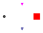

| Name | Description |
|---|---|
| Generator_SE | Electric generator inclusive of approximate swing equation |
| Generator_SE_com | Electric generator inclusive of complex swing equation |
| Generator_SE_Breaker | Electic generator inclusive of approximate swing equation and breaker for connection grid |
| Type | Name | Default | Description |
|---|---|---|---|
| Real | eta | 1 | Conversion efficiency |
| Integer | Np | 2 | Number of couple of electrical poles |
| Power | Pmax | Output maximum power [W] | |
| Real | J | Moment of inertia of the system-shaft | |
| Real | r | 0.3 | Damping of the system |
| AngularVelocity | omega_nom | Nominal angulary velocity of shaft [rad/s] | |
| Angle | delta_start | Loaded angle start value [rad] |
| Type | Name | Description |
|---|---|---|
| PowerConnection | powerConnection | |
| Flange_a | shaft |
model Generator_SE "Electric generator inclusive of approximate swing equation" //Parameter parameter Real eta=1 "Conversion efficiency"; parameter Integer Np=2 "Number of couple of electrical poles"; parameter SI.Power Pmax "Output maximum power"; parameter Real J "Moment of inertia of the system-shaft"; parameter Real r=0.3 "Damping of the system"; parameter SI.AngularVelocity omega_nom "Nominal angulary velocity of shaft"; parameter SI.Angle delta_start "Loaded angle start value"; //Variable SI.AngularVelocity omega "Shaft angular velocity"; SI.Conversions.NonSIunits.AngularVelocity_rpm n "Rotational speed"; SI.Angle delta(start=delta_start) "Loaded angle"; SI.AngularVelocity d_delta "Variation of loaded angle"; SI.AngularVelocity omegaGrid "Angulary velocity in the grid"; SI.Power Pe "Outlet electric power"; SI.Power Pm "Inlet mechanical power"; Real M "Auxiliary variable"; Real D "Auxiliary variable"; //Connector Electrical.PowerConnection powerConnection; Modelica.Mechanics.Rotational.Interfaces.Flange_a shaft; equation M=J/(Np^2)*omega_nom*Np; D=2*r*sqrt(Pmax*J*omega_nom*Np/(Np^2)); omega=der(shaft.phi); Pm=omega*shaft.tau; n = Modelica.SIunits.Conversions.to_rpm(omega) "Rotational speed in rpm"; omegaGrid = 2*Modelica.Constants.pi*powerConnection.f; powerConnection.W = - Pe; //Definition of loaded angle d_delta = omega*Np - omegaGrid; der(delta) = d_delta; //Swing Equation M*der(d_delta) + D*d_delta = Pm - Pe/eta; Pe = Pmax*Modelica.Math.sin(delta); end Generator_SE;
| Type | Name | Default | Description |
|---|---|---|---|
| Real | eta | 1 | Conversion efficiency |
| Integer | Np | 2 | Number of couple of electrical poles |
| Power | Pmax | Output maximum power [W] | |
| Real | J | Moment of inertia of the system-shaft | |
| Real | r | 0.3 | Damping of the system |
| Angle | delta_start | Start value of loaded angle [rad] |
| Type | Name | Description |
|---|---|---|
| PowerConnection | powerConnection | |
| Flange_a | shaft |
model Generator_SE_com "Electric generator inclusive of complex swing equation" parameter Real eta=1 "Conversion efficiency"; parameter Integer Np=2 "Number of couple of electrical poles"; parameter SI.Power Pmax "Output maximum power"; parameter Real J "Moment of inertia of the system-shaft"; parameter Real r=0.3 "Damping of the system"; parameter SI.Angle delta_start "Start value of loaded angle"; SI.AngularVelocity omega "Shaft angular velocity"; SI.Conversions.NonSIunits.AngularVelocity_rpm n "Rotational speed"; SI.Angle delta(start=delta_start) "Loaded angle"; SI.AngularVelocity d_delta "Variation of loaded angle"; SI.AngularVelocity omegaGrid "Angulary velocity in the grid"; SI.Power Pe "Outlet electric power"; SI.Power Pm "Inlet mechanical power"; Real M "Auxiliary variable"; Real D "Auxiliary variable"; Electrical.PowerConnection powerConnection; Modelica.Mechanics.Rotational.Interfaces.Flange_a shaft; equation M=J/(Np^2)*omega*Np; D=2*r*sqrt(Pmax*J*omega*Np/(Np^2)); omega=der(shaft.phi); Pm=omega*shaft.tau; n = Modelica.SIunits.Conversions.to_rpm(omega) "Rotational speed in rpm"; omegaGrid = 2*Modelica.Constants.pi*powerConnection.f; powerConnection.W = - Pe; //Definition of loaded angle d_delta = omega*Np - omegaGrid; der(delta) = d_delta; //Swing Equation M*der(d_delta) + D*d_delta = Pm - Pe; Pe = Pmax*Modelica.Math.sin(delta); end Generator_SE_com;

| Type | Name | Default | Description |
|---|---|---|---|
| Real | eta | 1 | Conversion efficiency |
| Integer | Np | 2 | Number of couple of electrical poles |
| Power | Pmax | Maximum power of generator [W] | |
| Real | J | Moment of inertia of the system-shaft | |
| Real | r | 0.3 | Damping of the system |
| AngularVelocity | omega_nom | Nominal angulary velocity of shaft [rad/s] | |
| Angle | delta_start | Loaded angle start value [rad] | |
| AngularVelocity | omega_start | Angulaty velocity of shaft start value [rad/s] |
| Type | Name | Description |
|---|---|---|
| PowerConnection | powerConnection | |
| Flange_a | shaft | |
| input BooleanInput | closed | |
| output RealOutput | delta_out |
model Generator_SE_Breaker
"Electic generator inclusive of approximate swing equation and breaker for connection grid"
//Parameters
parameter Real eta=1 "Conversion efficiency";
parameter Integer Np=2 "Number of couple of electrical poles";
parameter SI.Power Pmax "Maximum power of generator";
parameter Real J "Moment of inertia of the system-shaft";
parameter Real r=0.3 "Damping of the system";
parameter SI.AngularVelocity omega_nom "Nominal angulary velocity of shaft";
parameter SI.Angle delta_start "Loaded angle start value";
parameter SI.AngularVelocity omega_start
"Angulaty velocity of shaft start value";
SI.AngularVelocity omega(start=omega_start) "Shaft angular velocity";
SI.Conversions.NonSIunits.AngularVelocity_rpm n "Rotational speed";
SI.Angle delta(start=delta_start) "Loaded angle";
SI.AngularVelocity d_delta "Variation of loaded angle";
SI.AngularVelocity omegaGrid "Angulary velocity in the grid";
SI.Power Pe "Outlet electric power";
SI.Power Pm "Inlet mechanical power";
Real M "Auxiliary variable";
Real D "Auxiliary variable";
Electrical.PowerConnection powerConnection;
Modelica.Mechanics.Rotational.Interfaces.Flange_a shaft;
Modelica.Blocks.Interfaces.BooleanInput closed;
Modelica.Blocks.Interfaces.RealOutput delta_out;
equation
M=J/(Np^2)*omega_nom*Np;
D=2*r*sqrt(Pmax*J*omega_nom*Np/(Np^2));
omega=der(shaft.phi);
Pm=omega*shaft.tau;
n = Modelica.SIunits.Conversions.to_rpm(omega) "Rotational speed in rpm";
omegaGrid = 2*Modelica.Constants.pi*powerConnection.f;
powerConnection.W = - Pe;
//Definition loaded angle
d_delta = omega*Np - omegaGrid;
der(delta) = d_delta;
//swing equation
M*der(d_delta) + D*d_delta = Pm - Pe/eta;
if closed then
Pe = Pmax*Modelica.Math.sin(delta);
else
//Free turbine and not connection a grid
Pe = 0;
end if;
//Output signal
delta_out = delta - integer(delta/(2*Modelica.Constants.pi))*2*Modelica.Constants.pi;
end Generator_SE_Breaker;